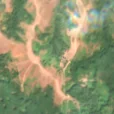
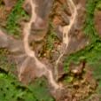

5,3 ha de pădure schimbată lângă Delinești
Între 23 august 2026 și 2 septembrie 2026, pe aproximativ 5,3 ha de pădure din comuna Păltiniș, lângă Delinești, județul Caraș-Severin, imaginile Sentinel-2 arată că vegetația a dispărut sau s-a schimbat puternic. E o schimbare care merită verificată.
Autorizația de tăiere
de confirmat pe poze
N-am găsit o autorizație care să acopere zona, dar nu putem spune ce s-a întâmplat aici: analistul AI fie n-a văzut încă pozele, fie le-a văzut și nu e sigur. Nu dăm roșu pe o bănuială, și nici nu spunem că e în regulă. Analistul înclină spre altceva decât o tăiere, dar nu e sigur. Printre astfel de zone au fost și tăieri reale.
Ce se vede în poze: În poza detaliată zona marcată are pâlcuri de copaci printre pajiști, o potecă și câteva clădiri mici, deci nu era pădure deasă. În poza «după», zona are aceeași culoare maronie ca dealurile din jur, așa că pare o schimbare de sezon și nu o tăiere.


Înainte și după: Copernicus Sentinel-2, 10 m pe pixel, conturul zonei cu portocaliu. Poza detaliată (Esri World Imagery) e de acum 1–4 ani: arată ce era acolo înainte, nu tăierea.
Pe scurt
- Identificator
- 20260902_45371_22079
- Locul
- Delinești, comuna Păltiniș, județul Caraș-Severin (SIRUTA 53425)
- Coordonate (centru)
- 45.37138, 22.07890 · Google Maps · OpenStreetMap
- Suprafața
- 5,3 ha (din pixeli de 10 m; ± câțiva pixeli pe margine)
- Ultima imagine cu pădurea întreagă
- 23 august 2026
- Prima imagine cu schimbarea
- 2 septembrie 2026
- Imagini în care se vede schimbarea
- 9
- Cât de sigur e semnalul din satelit
- ridicată
- Terenul
- în afara amenajamentelor silvice publicate (pășune, mal de apă sau pădure privată fără amenajament în registru)
- Garda Forestieră
- Timișoara
Dacă vrei să verifici sau să sesizezi
- Pădurile din județul Caraș-Severin sunt în grija Gărzii Forestiere Timișoara, care controlează tăierile și dă amenzile.
- Formularul Gărzii Forestiere Naționale primește sesizări și fără nume. Trimite linkul acestei pagini, coordonatele și pozele. Dacă tăierea e în desfășurare, sună la 112.
- Autorizațiile și transporturile de lemn se pot căuta în Inspectorul Pădurii.
Pagina arată ce se vede din satelit și ce scrie în registrul public; nu e o dovadă în sine.
Cum citezi zona
Linkul acestei pagini nu se schimbă. Dacă zona iese vreodată de pe hartă, pagina rămâne, cu data și cu ce știam despre ea.
Pădurea RO, zona 20260902_45371_22079: 5,3 ha, Delinești, comuna Păltiniș, județul Caraș-Severin; schimbare văzută din satelit între 23 august 2026 și 2 septembrie 2026. https://iliemihai.github.io/padurea-ro/zona/20260902_45371_22079/ (consultat la [data]). Date: CC BY 4.0.
Datele zonei: GeoJSON · toate zonele: date deschise · licența CC BY 4.0.
Istoricul zonei pe hartă
Starea se poate schimba când registrul publică o autorizație sau când analistul vede poze mai bune. O ținem aici, ca un link citat să arate și ce spuneam atunci.
Pe hartă cel târziu din 5 noiembrie 2026.
- 5 noiembrie 2026 – azi · de confirmat pe poze
Detalii tehnice, pentru verificare
De ce acest nivel de încredere:
- văzută schimbată în 9 imagini diferite
- peste 3 ha
- AI-ul vede pădure dispărută
- în poze, zona se schimbă vizibil față de pădurea din jur
Ce a văzut analistul cu context: În imaginea Sentinel-2 «după» (24.10.2026), tonurile brune și cenușii apar pe versanți întregi în vederea largă, nu doar în contur, ceea ce indică colorit de toamnă sau vegetație uscată. Solul dezgolit roz-deschis și rețeaua de ravene existau deja în imaginea din august 2026. Nu se văd margini drepte, resturi de exploatare sau drumuri de colectare noi. Coronamentul din 2000 (19%) și imaginea detaliată cu copaci răzleți susțin că nu era pădure închisă, deși cele 94% «copaci» din WorldCover spun altceva. Nu există autorizație de tăiere în 5 km. Un incendiu sau o alunecare de teren rămân posibile, de aceea încrederea este scăzută.
- Placa Sentinel-2
- 34TER
- NDVI de referință
- 0.87
- NBR de referință
- 0.67
- Scăderea în pădurea din jur
- 0.08
- Persistență
- 0.83
- NDVI / NBR după
- 0.336 / -0.107
- Analistul de zi (model)
- taiere · 0.85 · claude-haiku-5-5
- Analistul cu context (model)
- sezon_nori · 0.4
Cum se calculează fiecare: metodologia.
Pune harta zonei într-un articol
Copiază codul în articol (merge în majoritatea site-urilor de știri). Sau pune doar linkul: WhatsApp, Facebook și X arată singure poza zonei.